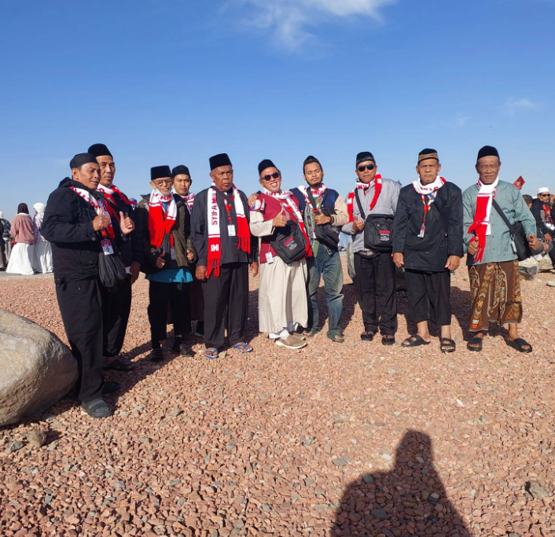

Umroh Reguler
Perjalanan nyaman dengan fasilitas lengkap dan pendampingan.
Mulai dari Rp 29,9 Jt- Hotel nyaman
- Transportasi
- Makan
- Bimbingan ibadah
Bersama Syifa Multazam Indonesia, wujudkan perjalanan Umroh yang nyaman, terarah, dan penuh ketenangan hati.
Lihat Paket KonsultasiSemoga setiap langkah menuju Baitullah menjadi perjalanan yang penuh keberkahan.
Syifa Multazam Indonesia hadir untuk membantu mempersiapkan perjalanan Umroh dengan pelayanan yang ramah, nyaman, dan penuh perhatian.
Kami percaya perjalanan menuju Tanah Suci adalah kesempatan untuk mendekatkan diri kepada Allah SWT.
Harga dan jadwal dapat disesuaikan dengan paket resmi yang tersedia.
Perjalanan nyaman dengan fasilitas lengkap dan pendampingan.
Mulai dari Rp 29,9 JtKenyamanan dan fasilitas yang lebih eksklusif.
Mulai dari Rp 35,9 JtPilihan perjalanan untuk ibadah bersama keluarga.
Hubungi KamiAkomodasi yang menunjang waktu istirahat jamaah.
Transportasi selama perjalanan Umroh.
Persiapan dan bimbingan rangkaian ibadah.
Tim pendamping membantu jamaah selama perjalanan.
Ceritakan kebutuhan dan rencana Umrohmu.
Lengkapi dokumen dan ikuti bimbingan.
Menuju Tanah Suci bersama pendamping.
Jalani rangkaian ibadah dengan khusyuk.
Pulang membawa doa dan pengalaman bermakna.
Dokumentasi perjalanan Umroh agar calon jamaah mendapat gambaran suasana, kebersamaan, dan momen selama di Tanah Suci.

Foto-foto jamaah bisa ditambahkan di sini satu per satu. Dengan begitu, pengunjung bisa melihat suasana perjalanan, kebersamaan, dan kegiatan Umroh bersama Syifa Multazam Indonesia.
Tanyakan Jadwal Umroh →Konsultasikan rencana Umrohmu bersama Syifa Multazam Indonesia.
💬 WhatsApp 0821-9020-0071 💬 WhatsApp 0852-8074-3729